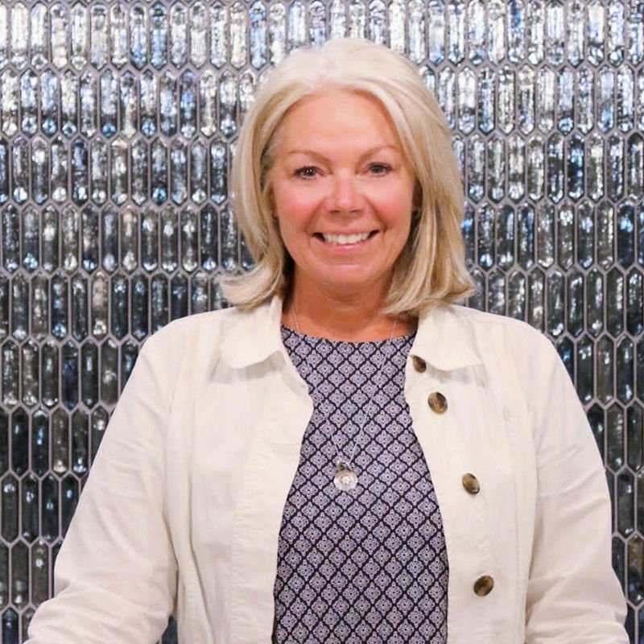
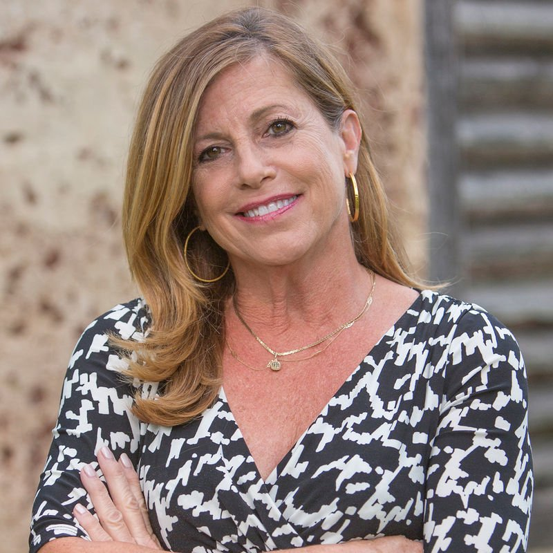
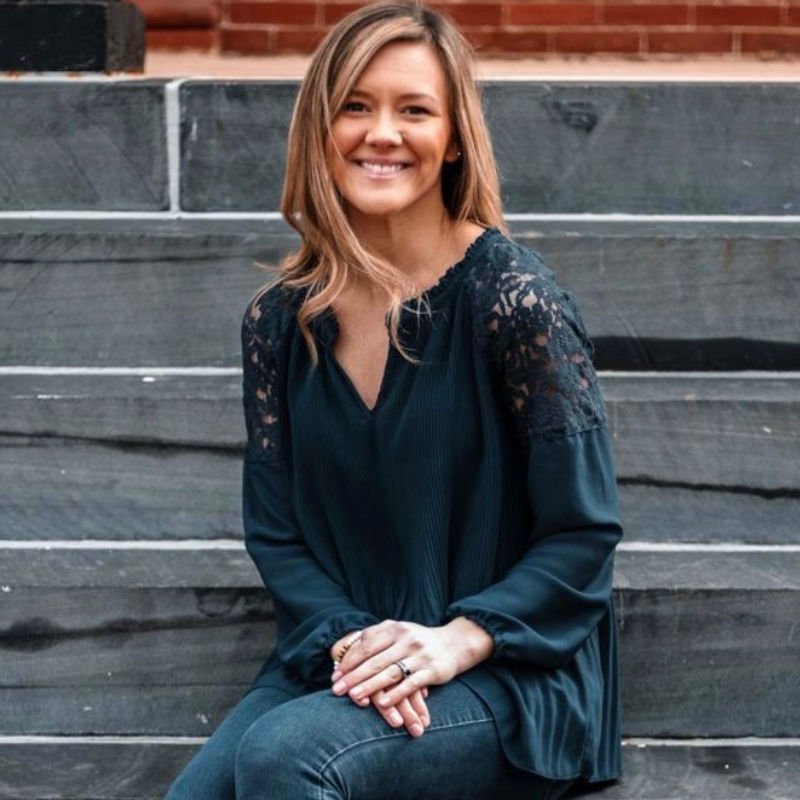

Who we are
Beyond The Mill Design is intentionally small — which means the people you meet are the people doing the work. Together we cover design, staging, client care, and the storytelling that shows the work at its best.

Julie has been in the interior design industry for over 30 years and is an Allied Member of ASID, the American Society of Interior Designers, with work featured in multiple publications. Since launching her custom furniture and interior design career in 1990, she has built an unusually broad base of experience — from bespoke furniture and full interior design to custom-built homes and renovations. She is known for listening carefully and keeping her clients' needs at the forefront of every decision.

Jane brings a lifelong passion for home décor and interior design. Her background spans photography styling for furniture retailers including Hecht's and Macy's, and design roles with Ethan Allen, Belfort, and Wolf Furniture. With Beyond The Mill Design she focuses on staging and client relations. Jane studied Art History at the University of Massachusetts, Boston, and lives in Leesburg, Virginia.

Krysta has been part of the team since 2012, specializing in website development, marketing, and social media. She also runs her own freelance photography business, Krysta Rene Photography. Her focus is capturing the beauty, authenticity, and quality of the studio's work — and making sure it is seen.
Tell us about your home and what you're hoping to create — we'd love to hear from you.
Inquire About a Project